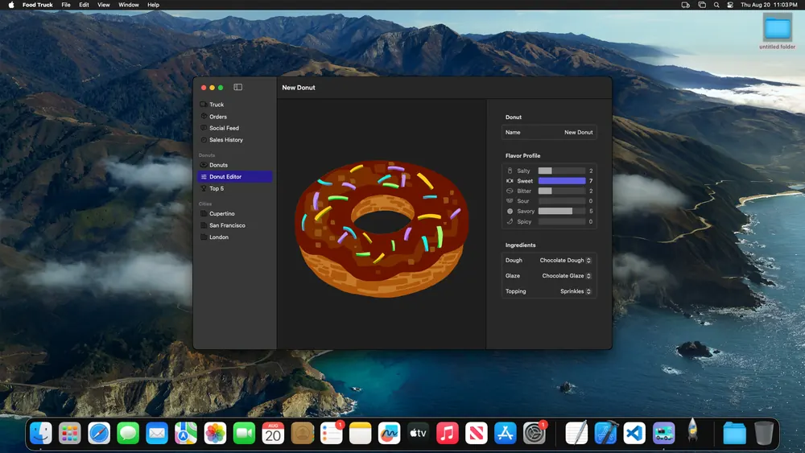
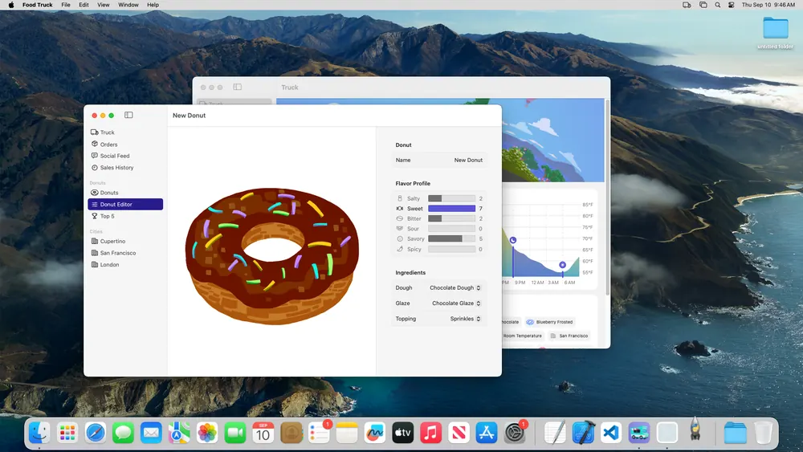

Bowen Zhou
M.S. Student in Artificial Intelligence · Tsinghua University · Research Intern @ Qwen Team, Alibaba
Building agents that operate GUIs
I am an M.S. student in Artificial Intelligence at Tsinghua University. Previously, I received my B.Eng. in Artificial Intelligence from Dalian University of Technology.
My research focuses on building Universal Digital Agents (UDAs), with an emphasis on Computer-Use Agents. I study how agents can understand and operate across digital environments, including graphical interfaces, terminals, and code. I am particularly interested in long-horizon reasoning, post-training, and Agentic RL for UDAs.
I aim to make computer use a core capability of frontier models and to bring UDAs into everyday life. Computers serve as the core medium for these agents. By operating digital systems and connecting them with real-world tasks, they can improve accessibility, extend human capabilities, and create meaningful impact in the physical world. I believe UDAs represent an important path toward AGI.
I am currently a research intern with the Qwen Team at Alibaba, where I am advised by Que Shen. Previously, I interned at Huawei Multimodal Lab and collaborated remotely with Microsoft Research Asia.
If you would like to talk about research or life, feel free to reach out. I am open to research collaborations and opportunities.
news
-
Released RecreationWorld, scalable and verifiable environments for hybrid Computer-Use Agents. new
-
WeaveBench and ST-Lite accepted by EMNLP 2026.
-
LoopX reached #1 on GitHub Trending.
-
Started a research internship with the Qwen Team at Alibaba.
-
Released WeaveBench, a benchmark for hybrid-interface Computer-Use Agents.
-
Started a research internship at Huawei Multimodal Lab.
-
Released ST-Lite for efficient long-horizon GUI agents.
-
Began a remote research collaboration with Microsoft Research Asia.
selected publications
Toward universal agents that can perceive, reason, and act across diverse digital interfaces.
-


Original app RecreationTech ReportRecreationWorld: Scalable and Verifiable Environments for Hybrid Computer-Use AgentsTechnical Report, 2026A framework that turns software recreation into scalable training environments with verifiable rewards, alongside a 250-task benchmark across Ubuntu, macOS, Windows, Android, and Web.
-
EMNLP 2026WeaveBench: A Long-Horizon, Real-World Benchmark for Computer-Use Agents with Hybrid InterfacesConference on Empirical Methods in Natural Language Processing (EMNLP), 2026
A benchmark of 114 real-world tasks across eight domains that require agents to interleave GUI observation with CLI and code execution; the best evaluated system reaches only 41.2% success.
-
-
Method. ST-Lite keeps the current step in full and only the salient, still-attended tokens of earlier screenshots, holding the KV cache at a fixed 20% budget. Schematic. EMNLP 2026ST-Lite: Training-Free KV Cache Compression with Spatio-Trajectory Guidance for Long-Horizon GUI AgentsConference on Empirical Methods in Natural Language Processing (EMNLP), 2026A training-free KV cache compression method tailored to GUI interaction traces, matching or exceeding Full Cache accuracy at a 20% budget while delivering up to 2.35× decoding speedup.
-
Method. Older frames are encoded at lower resolution, and flat background patches of the current screenshot are pruned by UI structure. Schematic; real screenshot from RecreationBench. arXiv 2026GUIPruner: Spatio-Temporal Token Pruning for Efficient High-Resolution GUI AgentsarXiv preprint, 2026A training-free framework that combines temporal-adaptive resolution with structure-aware visual-token pruning, achieving a 3.4× FLOPs reduction and a 3.3× vision-encoding speedup while retaining over 94% of the original performance.
-
open source
An open-source framework for long-horizon agents that preserves task state across sessions and coordinates work across Codex, Claude Code, and other agent tools. It supports recovery, handoffs, and human oversight so agents can continue complex work reliably.
experience
-
Jul 2026 – Present
 Qwen Team, Alibaba GroupResearch Intern · Base Model Team · Advised by Que Shen
Qwen Team, Alibaba GroupResearch Intern · Base Model Team · Advised by Que ShenResearch on foundation models, multimodal reasoning, and generalist agents for complex digital environments.
-
Apr 2026 – Jul 2026
 Huawei Multimodal LabResearch Intern · Base Model Team
Huawei Multimodal LabResearch Intern · Base Model TeamMultimodal foundation-model research, scalable training, and research prototyping.
-
Jan 2026 – May 2026
 Microsoft Research AsiaResearch Collaboration · Remote
Microsoft Research AsiaResearch Collaboration · RemoteHybrid-interface Computer-Use Agents and the WeaveBench benchmark.
education
-
Present
 Tsinghua UniversityM.S. in Artificial Intelligence
Tsinghua UniversityM.S. in Artificial Intelligence -
 Dalian University of TechnologyB.Eng. in Artificial Intelligence
Dalian University of TechnologyB.Eng. in Artificial Intelligence
skills
| Research | Universal Digital Agents · Agentic RL · Multimodal Foundation Models · Inference Optimization |
|---|---|
| Languages | Python · C/C++ · LaTeX |
| Frameworks | PyTorch · veRL · slime · vLLM · SGLang · Transformers |
| Systems | Docker · Kubernetes · VM-based agent environments · large-scale evaluation |